Cara Untuk Menganalisis Gambar
Firyal Nabila Zalfa
UIN Maulana Malik Ibrahim Malang
28 Maret 2021
Sebelum kita mulai, pastikan dulu kita sudah menginstal package EBImage di RStudio kita. Untuk menginstalnya kalian bisa mengikuti kode dibawah ini.
Started
Instal package
if(!requireNamespace("BiocManager", quietly = TRUE))
install.packages("BiocManager")
BiocManager::install("EbImage")Panggil package
Lalu kita memanggil library EBImage untuk memastikan bahwa package EBImage sudah terpasang di RStudio. Jika tidak menampilkan apa-apa/kosong itu menandakan bahwa package EBImage sudah siap/terpasang di RStudio kita.
library(EBImage)Reading Image
Untuk mengimport gambar pastikan bahwa lokasi gambar yang ada pada device kita sesuai, dan ubah tanda menjadi /.
Untuk membaca gambar menggunakan readImage() dan masukan lokasi gambar dan nama gambar. Dan jangan lupa memberi nama variabel/inisialisai baru untuk memanggil gambar tersebut, saya memberikan nama Image.
Untuk menampilkan gambar menggunakan display(Image).
Image <- readImage("C:/Users/ASUS/OneDrive/Pictures/Kiyomizudera.jpg")
display(Image)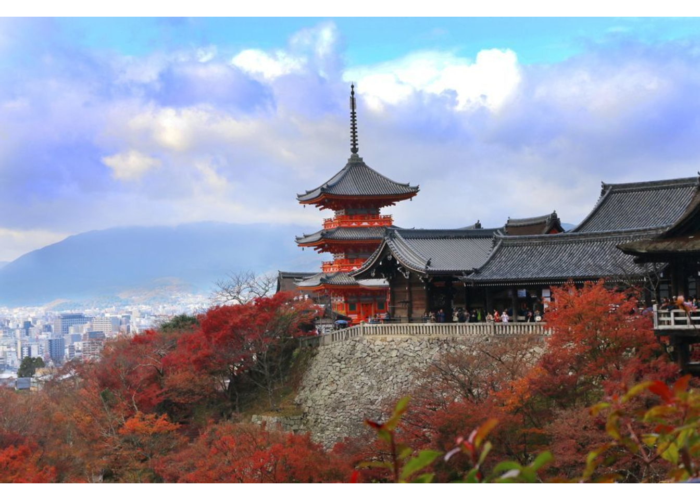
Data image
Untuk melihat data dari gambar menggunakan print(Image). Pada code ini akan menampilkan sifat gambar, nilai-nilai piksel, dan informasi lainnya.
print(Image)## Image
## colorMode : Color
## storage.mode : double
## dim : 1000 667 3
## frames.total : 3
## frames.render: 1
##
## imageData(object)[1:5,1:6,1]
## [,1] [,2] [,3] [,4] [,5] [,6]
## [1,] 0.7882353 0.7882353 0.7882353 0.7882353 0.7882353 0.7882353
## [2,] 0.7882353 0.7882353 0.7882353 0.7882353 0.7882353 0.7882353
## [3,] 0.7882353 0.7882353 0.7882353 0.7882353 0.7882353 0.7882353
## [4,] 0.7882353 0.7882353 0.7882353 0.7882353 0.7882353 0.7882353
## [5,] 0.7882353 0.7882353 0.7882353 0.7882353 0.7803922 0.7803922Histogram image
Untuk melihat histogram dari gambar menggunakan hist(Image).
hist(Image)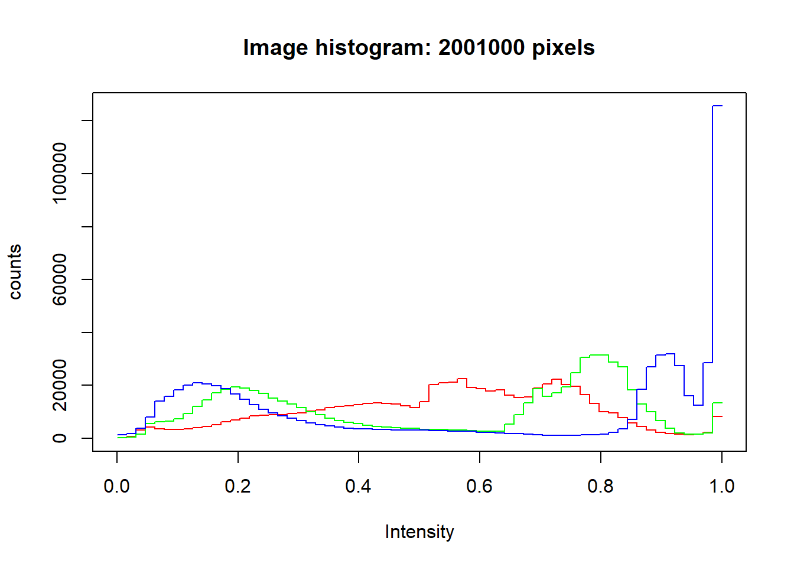
Label image
Untuk memberi nama diatas gambar
display(Image, method="raster")
text(x = 20, y = 20, label = "Kiyomizudera", adj = c(0,1), col = "purple", cex = 2)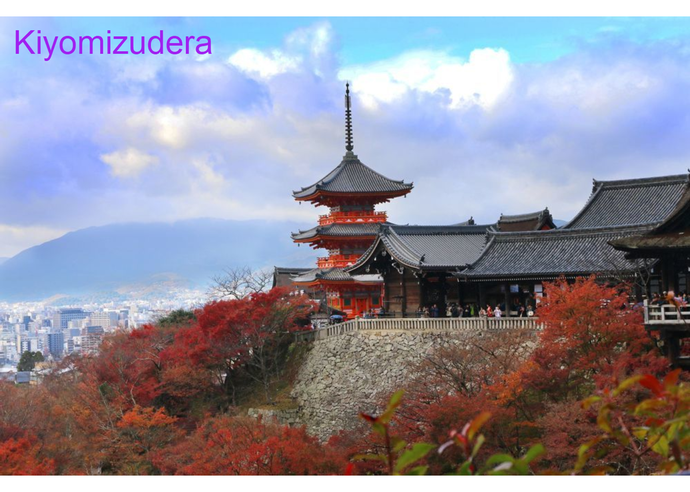
Bingkai
Untuk membuat bingkai pada gambar
nuc = readImage(system.file("images", "nuclei.tif", package="EBImage"))
display(nuc, method = "raster", all = TRUE)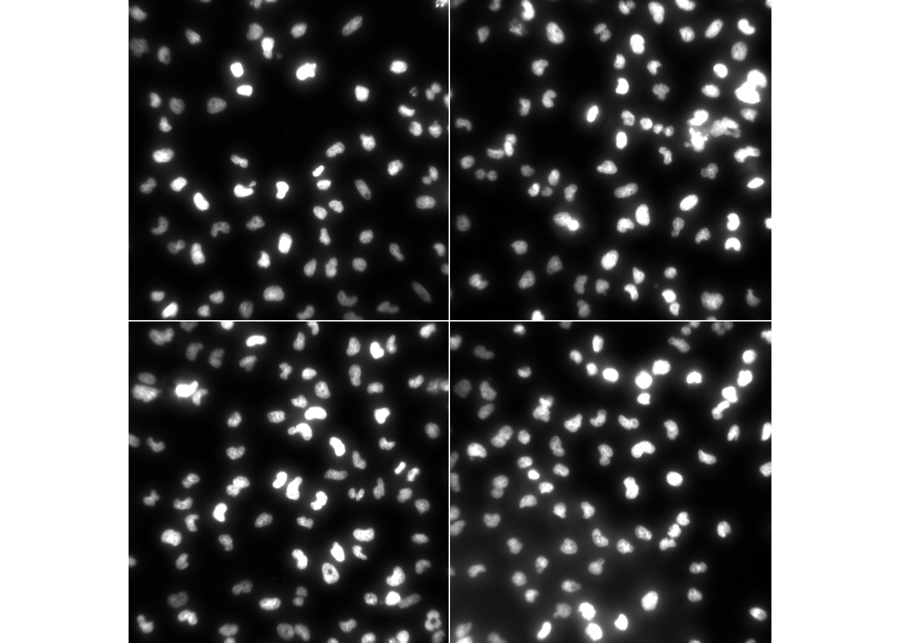
Editing image
Sekarang kita akan mengubah cahaya dan posisi dari gambar.
Brightness
Untuk memanipulasi kecerahan gambar menggunakan tanda + untuk menambah intensitas cahaya pada gambar dan tanda - untuk mengurangi intensitas cahaya pada gambar.
Untuk menampilkan 2 gambar menggunakan plot(Image1) dan plot (Image2).
Gambar sebelah kanan adalah gambar yang ditambahi intensitas cahayanya dan gambar sebelah kiri adalah gambar yang dikurangi intensitas cahayanya.
Image1 <- Image + 0.2
Image2 <- Image - 0.2
par(mfrow= c(1,2))
plot(Image1)
plot(Image2)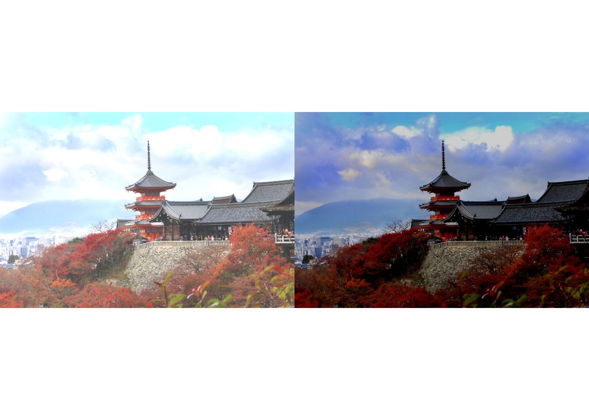
Adjusting contrast
Untuk memanipulasi gambar dengan kontars menggunakan tanda * untuk mengatur kontras pada gambar.
Untuk menampilkan 2 gambar menggunakan plot(Image3) dan plot (Image4).
Gambar sebelah kanan adalah gambar dengan kontras cahaya yang dikali 0.5 dan gambar sebelah kiri adalah gambar dengan kontar cahaya yang dikali 2.
Image3 <- Image * 0.5
Image4 <- Image * 2
par(mfrow= c(1,2))
plot(Image3)
plot(Image4)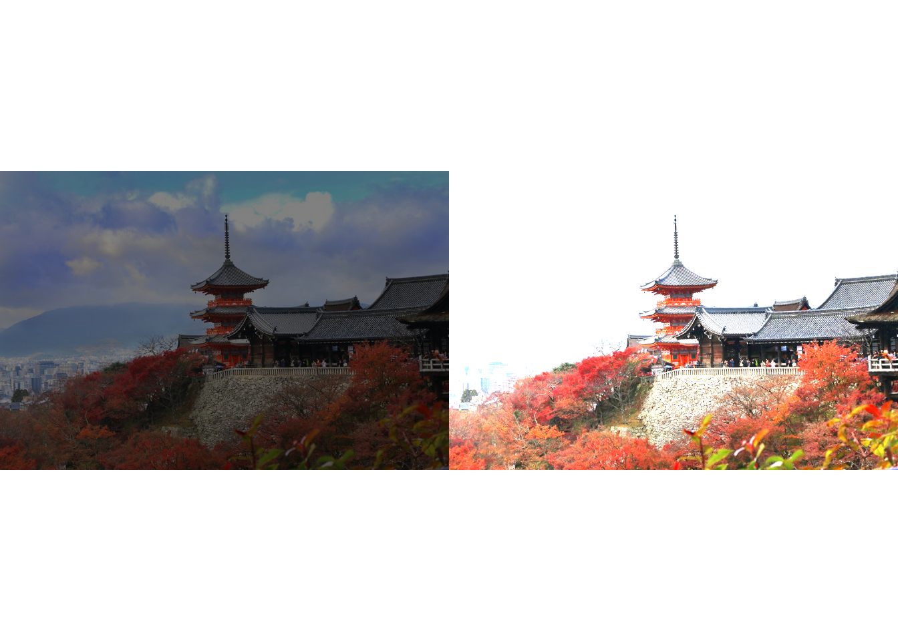
Gamma correction
Koreksi gamma adalah nama dari operasi nonlinear yang digunakan untuk kode dan decode luminance atau tristimulus.
Untuk memanipulasi gambar dengan gamma menggunakan tanda ^ untuk mengatur gamma pada gambar.
Untuk menampilkan 2 gambar menggunakan plot(Image5) dan plot (Image6).
Gambar sebelah kanan adalah gambar dengan gamma sebesar 2 dan gambar sebelah kiri adalah gambar dengan gamma sebesar 0.7.
Image5 <- Image ^ 2
Image6 <- Image ^ 0.7
par(mfrow= c(1,2))
plot(Image5)
plot(Image6)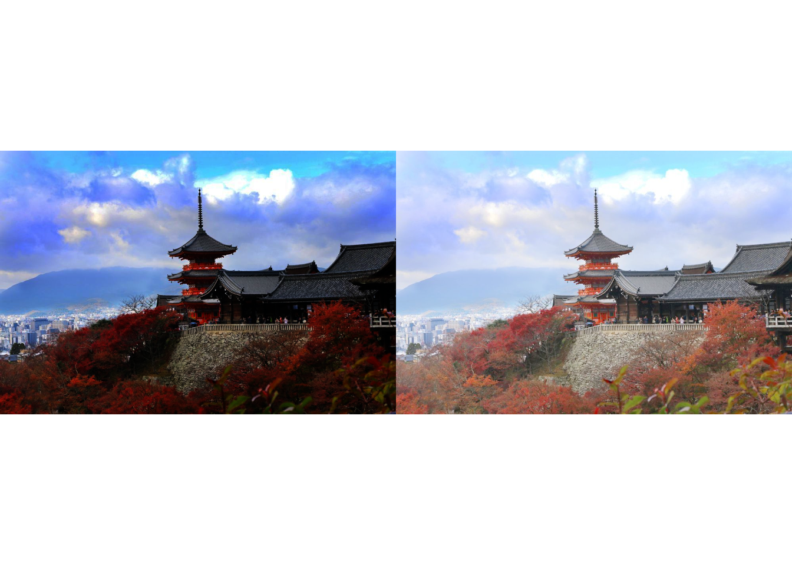
Cropping
Untuk memotong array dari pixel gambar menggunakan display(Image[ukuran seberapa besar yang dipotong/crop]). Disini saya dengan ukuran 80:900, 100:600.
display(Image[80:900, 100:300,])Transformation image
Untuk merotate gambar menggunakan code yang sudah ada di EBImage Imagetr <- translate(rotate(Image, 45 (derajat gambar yang di putar)), c(50,0))
Imagetr <- translate(rotate(Image, 45), c(50,0))
display(Imagetr)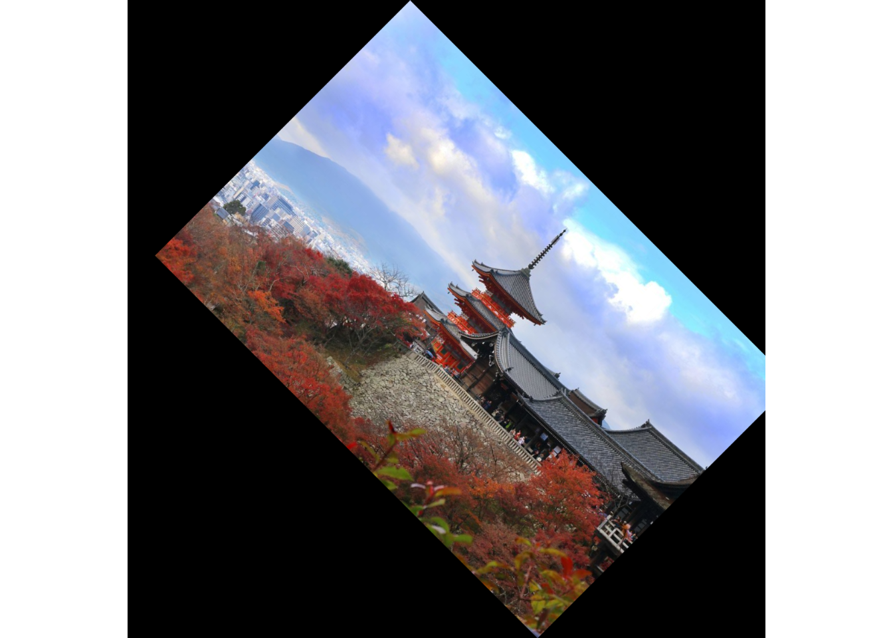
Color management
Karena array pixel memiliki tiga sumbu di dimensi, contohnya 1200 x 800 x 3. Sumbu ketiga adalah slot untuk tiga saluran: merah, hijau dan biru, atau RGB.
Disini kita akan mengubah warna color menjadi grayscale menggunakan colormode(Image) <- Grayscale.
Untuk menampilkan gambar menggunakan display(Image).
Gambar berubah warna menjadi abu-abu.
colorMode(Image) <- Grayscale
display(Image)## Only the first frame of the image stack is displayed.
## To display all frames use 'all = TRUE'.Data image
Untuk melihat data dari gambar menggunakan print(Image). Pada code ini akan menampilkan sifat gambar, nilai-nilai piksel, dan informasi lainnya.
print(Image)## Image
## colorMode : Grayscale
## storage.mode : double
## dim : 1000 667 3
## frames.total : 3
## frames.render: 3
##
## imageData(object)[1:5,1:6,1]
## [,1] [,2] [,3] [,4] [,5] [,6]
## [1,] 0.7882353 0.7882353 0.7882353 0.7882353 0.7882353 0.7882353
## [2,] 0.7882353 0.7882353 0.7882353 0.7882353 0.7882353 0.7882353
## [3,] 0.7882353 0.7882353 0.7882353 0.7882353 0.7882353 0.7882353
## [4,] 0.7882353 0.7882353 0.7882353 0.7882353 0.7882353 0.7882353
## [5,] 0.7882353 0.7882353 0.7882353 0.7882353 0.7803922 0.7803922Histogram image
Untuk melihat histogram dari gambar menggunakan hist(Image).
hist(Image)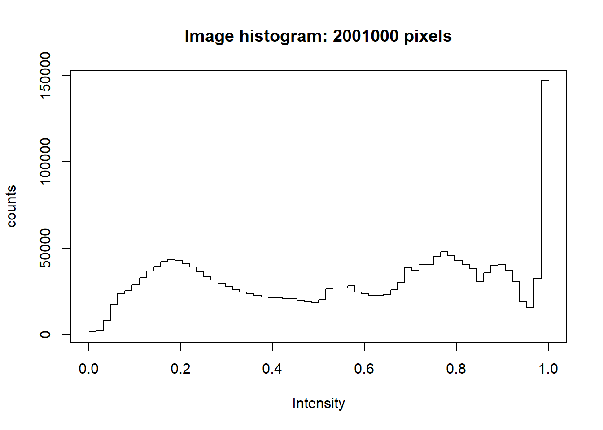
Color
Untuk mengembalikan warna gambar seperti semula menggunakan colorMode(Image) <- Color.
Untuk menampilkan gambar menggunakan display(Image).
colorMode(Image) <- Color
display(Image)Manipulating image
Untuk memanipulasi gambar yang menghasilkan gambar negatif
img_neg = max(Image) - Image
display( img_neg )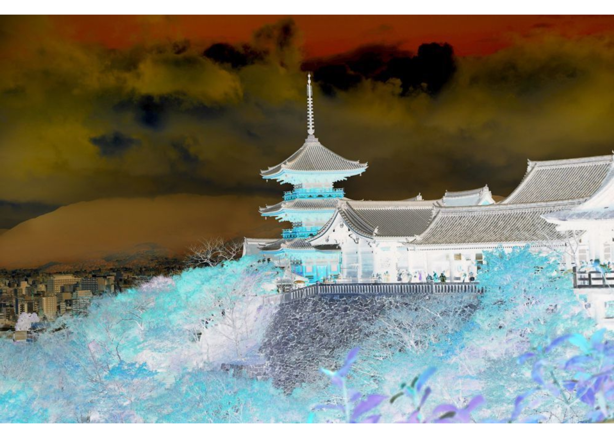
img_t = transpose(Image)
display( img_t )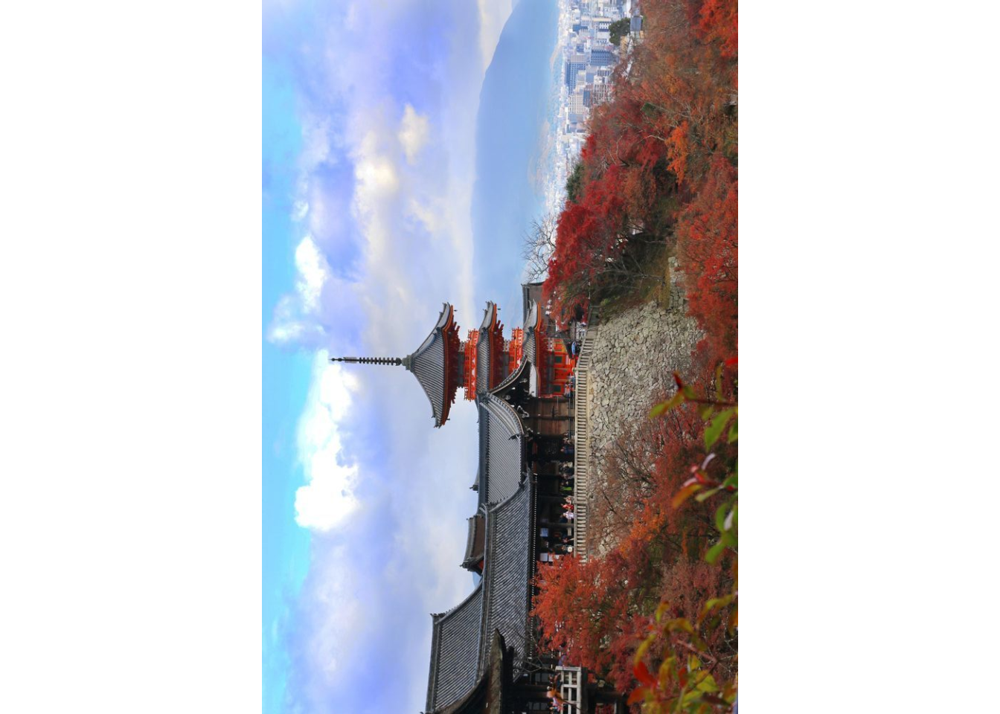
Filtering
Untuk melakukan smoothing/blurring menggunakan low-pass filter dan high-pass filter, dan median filter.
Low-pass filter
flow <- makeBrush(21, shape= 'disc', step=FALSE)^2
flow <- flow/sum(flow)
Image.flow <- filter2(Image, flow)
display(Image.flow)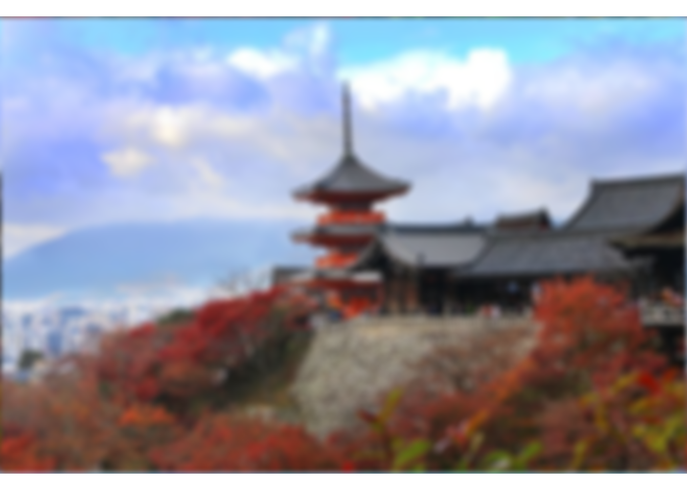
High-pass filter
fHigh <- matrix(1, nc= 3, nr= 3)
fHigh[2, 2] <- -8
Image.fHigh <- filter2(Image, fHigh)
display(Image.fHigh)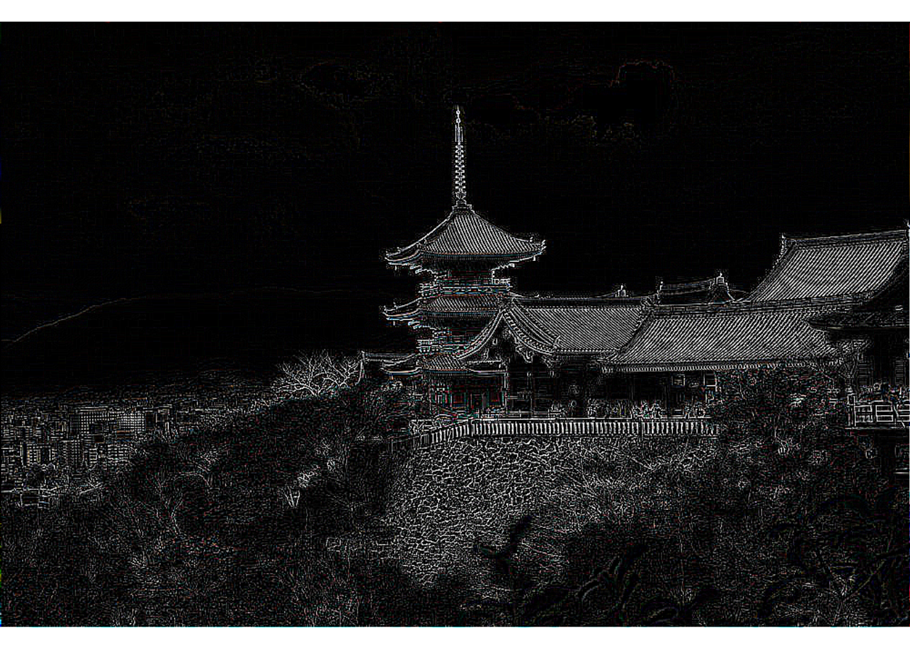
Median filter
Untuk menghilangkan noise pada gambar menggunakan medFLTR <- medianFilter(Image, 1.1).
Gambar sebelah kanan adalah gambar noise dan gambar sebelah kiri adalah hasil gambar yang sudah dihilangkan noisenya.
Image <- readImage("C:/Users/ASUS/OneDrive/Pictures/lena.jpg")
medFltr <- medianFilter(Image, 1.1)
par(mfrow= c(1,2))
plot(Image)
plot(medFltr)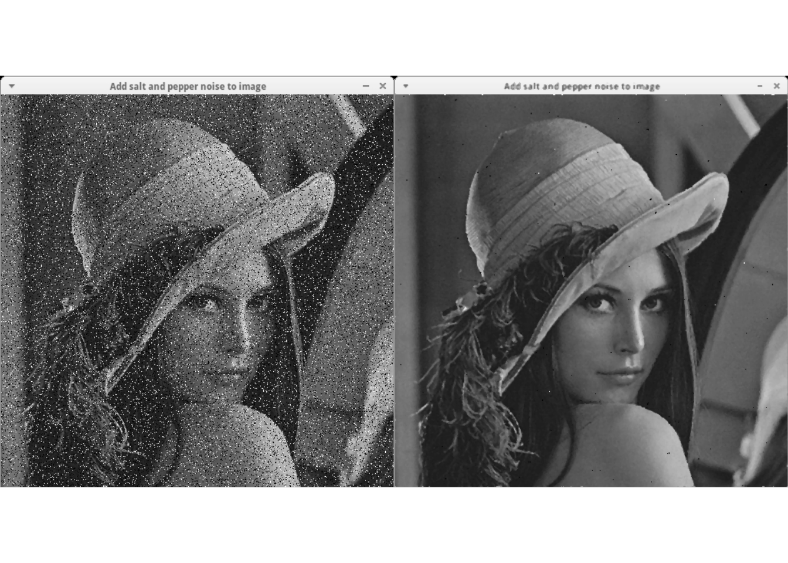
Hasil gambar lebih jelasnya
display(medFltr)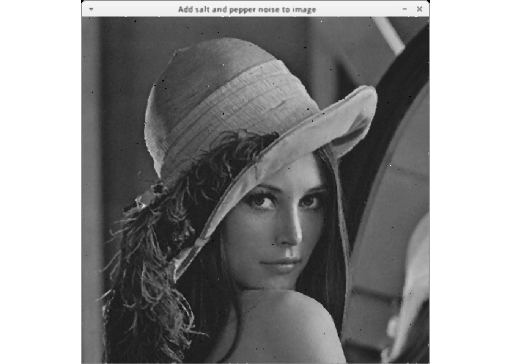
Operasi morfologis
Sebuah elemen penataan di atas gambar
shapes = readImage(system.file('images', 'shapes.png', package='EBImage'))
logo = shapes[110:512,1:130]
display(logo)
kern = makeBrush(5, shape='diamond')
display(kern, interpolate=FALSE)
logo_erode= erode(logo, kern)
logo_dilate = dilate(logo, kern)
display(combine(logo_erode, logo_dilate), all=TRUE)
Segmentasi image
Segmentasi gambar melakukan partisi gambar, dan biasanya digunakan untuk mengidentifikasi objek dalam gambar. Objek terhubung yang tidak bersentuhan dapat disegmentasi menggunakan fungsi bwlabel, sedangkan DAS dan propagasi menggunakan algoritma yang lebih canggih yang dapat memisahkan objek yang saling bersentuhan.
logo_label = bwlabel(logo)
table(logo_label)## logo_label
## 0 1 2 3 4 5 6 7
## 42217 1375 2012 934 1957 1135 1697 1063Nilai maksimal jumlah objek di dalamnya
max(logo_label)## [1] 7display( normalize(logo_label) )
Memberikan warna pada logo
display( colorLabels(logo_label) )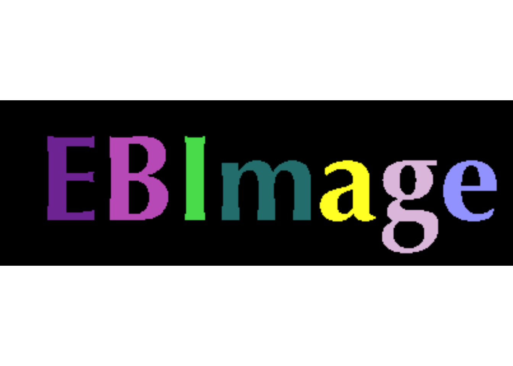
Daftar Pustaka
Berikut adalah sumber referensi yang digunakan dalam pembuatan web ini:
1. https://thinkstudioo.blogspot.com/2018/03/analisis-image-menggunakan-ebimage-di-r.html
2. https://thinkstudioo.blogspot.com/2018/03/analisis-image-menggunakan-ebimage-di-r_6.html
3. http://www.socr.umich.edu/people/dinov/courses/DSPA_notes/DSPA_Appendix_6_ImageFilteringSpectralProcessing.html#1_Getting_started